Change analysis for Japan for PRIMAP-hist v2.6_final compared to
v2.5.1_final
Overview over
emissions by sector and gas
The following figures show the aggregate national total emissions
excluding LULUCF AR6GWP100 for the country reported priority scenario.
The dotted linesshow the v2.5.1_final data.
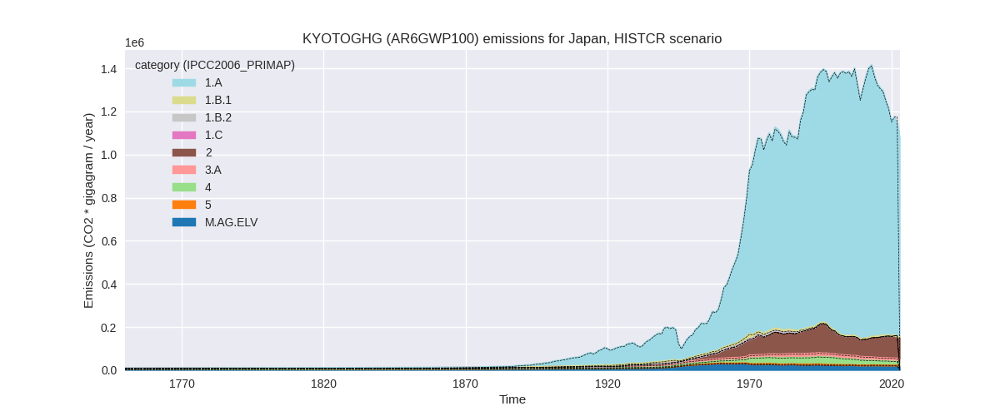
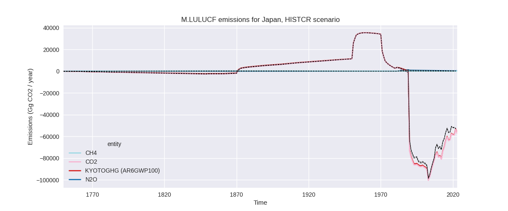
The following figures show the aggregate national total emissions
excluding LULUCF AR6GWP100 for the third party priority scenario. The
dotted linesshow the v2.5.1_final data.
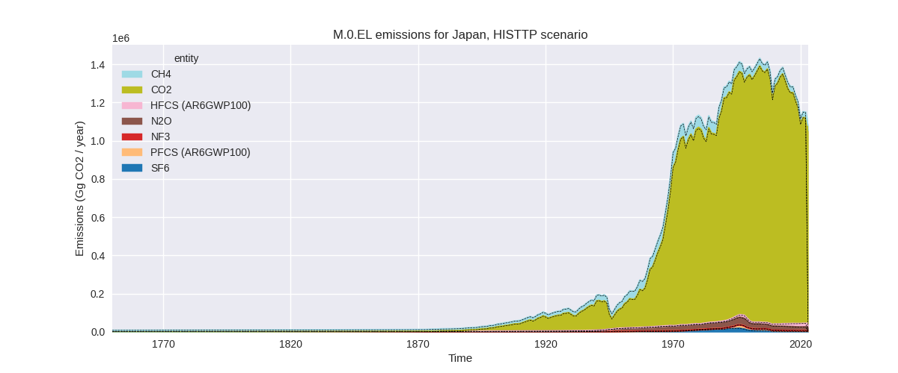
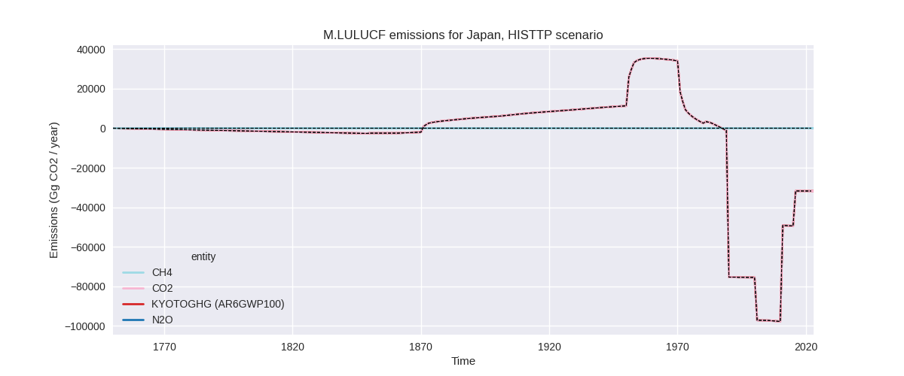
Overview over changes
In the country reported priority scenario we have the following
changes for aggregate Kyoto GHG and national total emissions excluding
LULUCF (M.0.EL):
- Emissions in 2022 have changed by -2.5%% (-29571.30 Gg CO2 / year)
- Emissions in 1990-2022 have changed by 0.1%% (1666.47 Gg CO2 / year)
In the third party priority scenario we have the following changes
for aggregate Kyoto GHG and national total emissions excluding LULUCF
(M.0.EL):
- Emissions in 2022 have changed by 0.2%% (1739.30 Gg CO2 / year)
- Emissions in 1990-2022 have changed by 0.2%% (2603.46 Gg CO2 / year)
Most
important changes per scenario and time frame
In the country reported priority scenario the
following sector-gas combinations have the highest absolute impact on
national total KyotoGHG (AR6GWP100) emissions in 2022
(top 5):
- 1: 1.A, CO2 with -24070.43 Gg CO2 / year (-2.4%)
- 2: 2, HFCS (AR6GWP100) with -4358.95 Gg CO2 / year (-7.5%)
- 3: 3.A, N2O with 934.76 Gg CO2 / year (36.1%)
- 4: M.AG.ELV, N2O with -793.08 Gg CO2 / year (-12.9%)
- 5: 2, NF3 with -337.91 Gg CO2 / year (-48.2%)
In the country reported priority scenario the
following sector-gas combinations have the highest absolute impact on
national total KyotoGHG (AR6GWP100) emissions in
1990-2022 (top 5):
- 1: 1.A, CO2 with -1226.10 Gg CO2 / year (-0.1%)
- 2: 3.A, N2O with 1141.28 Gg CO2 / year (43.6%)
- 3: M.AG.ELV, N2O with -996.28 Gg CO2 / year (-14.6%)
- 4: 2, HFCS (AR6GWP100) with 748.07 Gg CO2 / year (2.6%)
- 5: 2, CO2 with 691.91 Gg CO2 / year (1.3%)
In the third party priority scenario the following
sector-gas combinations have the highest absolute impact on national
total KyotoGHG (AR6GWP100) emissions in 2022 (top
5):
- 1: 2, HFCS (AR6GWP100) with -1068.37 Gg CO2 / year (-5.5%)
- 2: 2, CO2 with 782.94 Gg CO2 / year (1.5%)
- 3: 4, CH4 with 747.98 Gg CO2 / year (9.5%)
- 4: 1.A, CO2 with 696.40 Gg CO2 / year (0.1%)
- 5: 2, N2O with 461.02 Gg CO2 / year (43.6%)
In the third party priority scenario the following
sector-gas combinations have the highest absolute impact on national
total KyotoGHG (AR6GWP100) emissions in 1990-2022 (top
5):
- 1: 2, CO2 with 836.05 Gg CO2 / year (1.2%)
- 2: 4, CH4 with 665.61 Gg CO2 / year (4.7%)
- 3: 5, N2O with 664.71 Gg CO2 / year (19.7%)
- 4: 2, N2O with 152.07 Gg CO2 / year (3.7%)
- 5: 4, N2O with 79.61 Gg CO2 / year (3.4%)
Notes on data changes
Here we list notes explaining important emissions changes for the
country. ’' means that the following text only applies to the TP time
series, while means that it only applies to the CR scenario. Otherwise
the note applies to both scenarios.
- We have included the 2024 release of the official Japanese GHG
inventory.
- Energy CO2 emissions are lower than in v2.5.1 because 2022 growth
rates in the inventory data are lower than in EI2023 data. HFCs
emissions are lower for the last years.
- Agricultural N2O emissions have a different distribution to
subsectors because the detail of the inventory data is not sufficient
for a full mapping to IPCC2006 categories and indirect emissions from
manure management are grouped with direct emissions in 3.A instead of
3.C.6.
- Cumulative emissions changes for individual sectors in the CR
scenario are due to the lower HFCs data and the agricultural N2O
subsector assignment. Total cumulative emissions are almost
unchanged.
- Changes in the TP scenario are small and limited to subsectors.
Changes by sector and gas
For each scenario and time frame the changes are displayed for all
individual sectors and all individual gases. In the sector plot we use
aggregate Kyoto GHGs in AR6GWP100. In the gas plot we usenational total
emissions without LULUCF. ## country reported scenario
2022
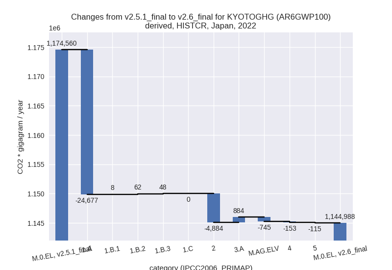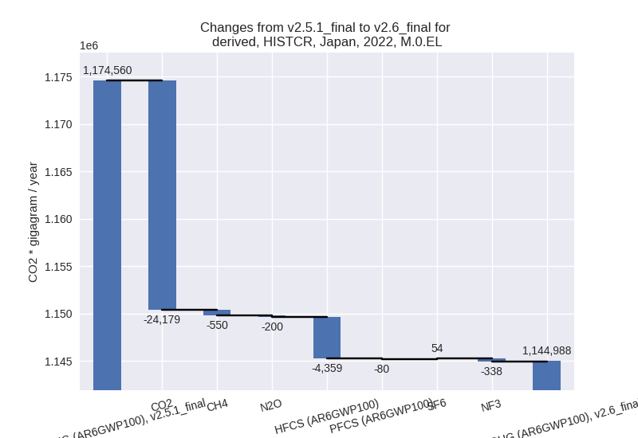
1990-2022
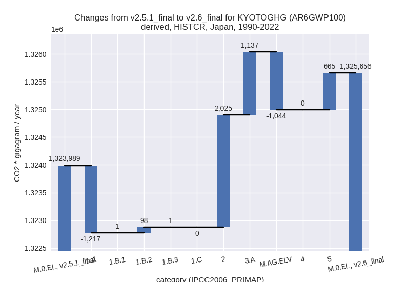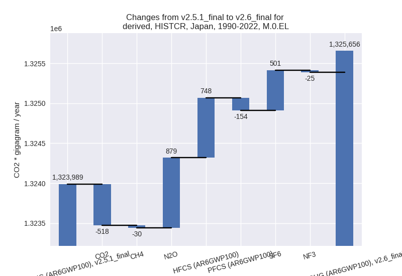
third party scenario
2022
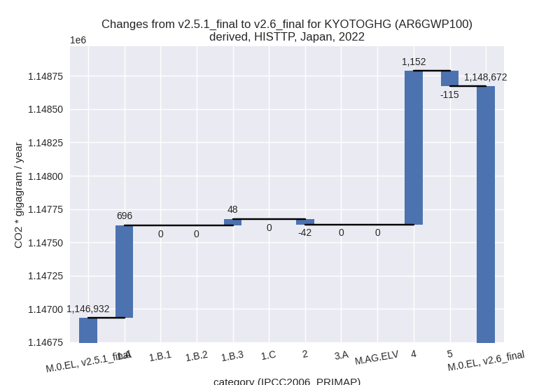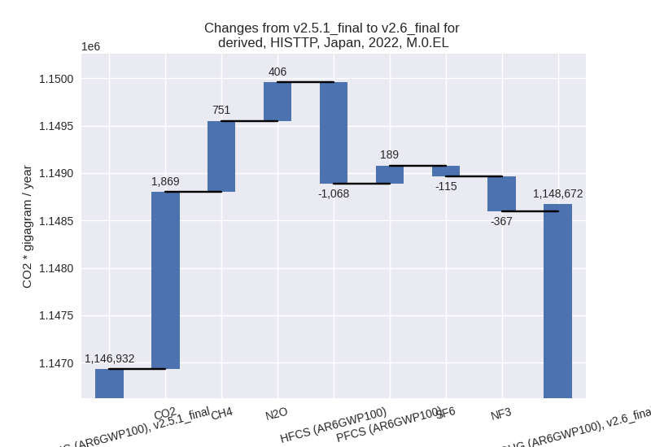
1990-2022
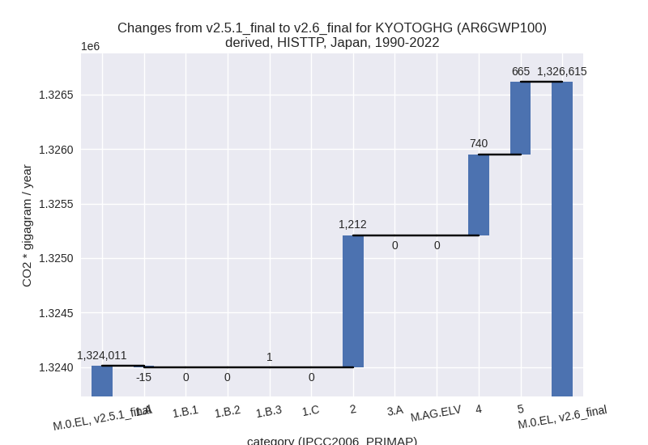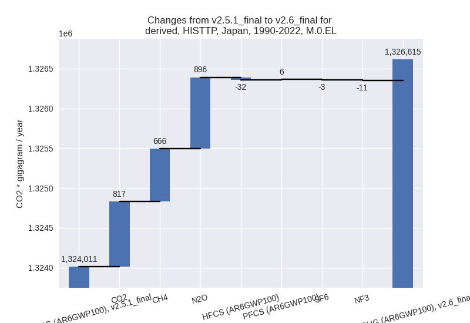
Detailed changes for the
scenarios:
country reported scenario
(HISTCR):
Most important changes
per time frame
For 2022 the following sector-gas combinations have
the highest absolute impact on national total KyotoGHG (AR6GWP100)
emissions in 2022 (top 5):
- 1: 1.A, CO2 with -24070.43 Gg CO2 / year (-2.4%)
- 2: 2, HFCS (AR6GWP100) with -4358.95 Gg CO2 / year (-7.5%)
- 3: 3.A, N2O with 934.76 Gg CO2 / year (36.1%)
- 4: M.AG.ELV, N2O with -793.08 Gg CO2 / year (-12.9%)
- 5: 2, NF3 with -337.91 Gg CO2 / year (-48.2%)
For 1990-2022 the following sector-gas combinations
have the highest absolute impact on national total KyotoGHG (AR6GWP100)
emissions in 1990-2022 (top 5):
- 1: 1.A, CO2 with -1226.10 Gg CO2 / year (-0.1%)
- 2: 3.A, N2O with 1141.28 Gg CO2 / year (43.6%)
- 3: M.AG.ELV, N2O with -996.28 Gg CO2 / year (-14.6%)
- 4: 2, HFCS (AR6GWP100) with 748.07 Gg CO2 / year (2.6%)
- 5: 2, CO2 with 691.91 Gg CO2 / year (1.3%)
Changes in the main sectors for aggregate KyotoGHG (AR6GWP100)
are
- 1: Total sectoral emissions in 2022 are 989327.69
Gg CO2 / year which is 86.4% of M.0.EL emissions. 2022 Emissions have
changed by -2.4% (-24559.11 Gg CO2 /
year). 1990-2022 Emissions have changed by -0.1% (-1116.20 Gg CO2 / year). For 2022
the changes per gas
are:
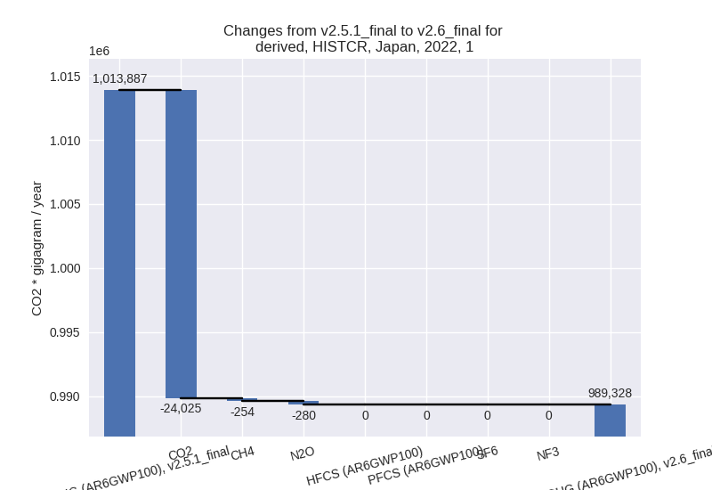
The changes come from the following subsectors:
- 1.A: Total sectoral emissions in 2022 are 988148.29
Gg CO2 / year which is 99.9% of category 1 emissions. 2022 Emissions
have changed by -2.4% (-24676.91 Gg
CO2 / year). 1990-2022 Emissions have changed by -0.1% (-1216.67 Gg CO2 / year). For 2022
the changes per gas
are:
There is no subsector information available in PRIMAP-hist.
- 1.B.1: Total sectoral emissions in 2022 are 512.31
Gg CO2 / year which is 0.1% of category 1 emissions. 2022 Emissions have
changed by 1.6% (8.24 Gg CO2 /
year). 1990-2022 Emissions have changed by 0.0% (0.71 Gg CO2 / year).
- 1.B.2: Total sectoral emissions in 2022 are 460.39
Gg CO2 / year which is 0.0% of category 1 emissions. 2022 Emissions have
changed by 15.5% (61.80 Gg CO2 /
year). 1990-2022 Emissions have changed by 21.1% (98.32 Gg CO2 / year). For 2022 the
changes per gas
are:
For 1990-2022 the changes per gas
are:
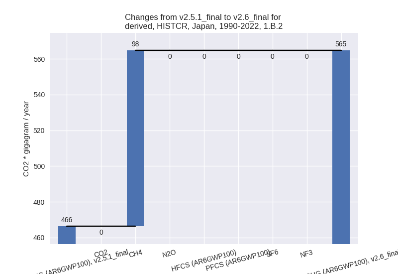
There is no subsector information available in PRIMAP-hist.
- 2: Total sectoral emissions in 2022 are 101719.77
Gg CO2 / year which is 8.9% of M.0.EL emissions. 2022 Emissions have
changed by -4.6% (-4883.69 Gg CO2 /
year). 1990-2022 Emissions have changed by 2.0% (2025.43 Gg CO2 / year). For 2022 the
changes per gas
are:
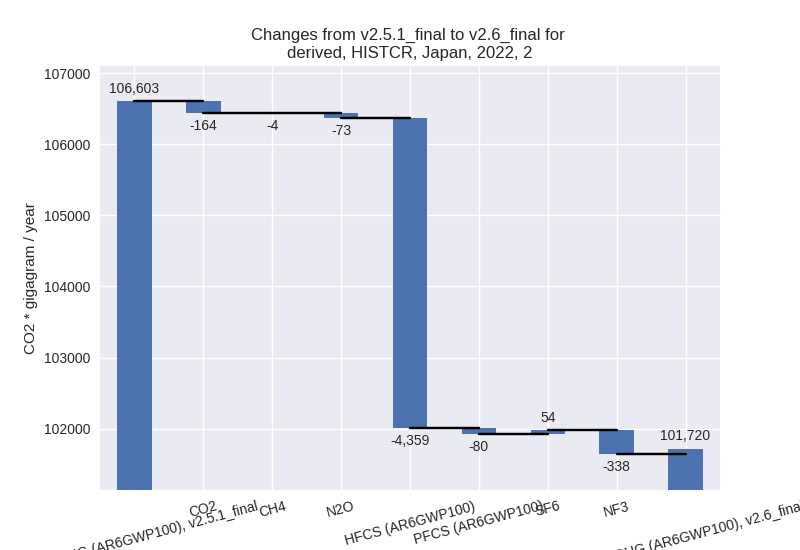
- M.AG: Total sectoral emissions in 2022 are 33682.69
Gg CO2 / year which is 2.9% of M.0.EL emissions. 2022 Emissions have
changed by 0.4% (139.32 Gg CO2 /
year). 1990-2022 Emissions have changed by 0.3% (92.41 Gg CO2 / year).
- 4: Total sectoral emissions in 2022 are 17607.16 Gg
CO2 / year which is 1.5% of M.0.EL emissions. 2022 Emissions have
changed by -0.9% (-152.56 Gg CO2 /
year). 1990-2022 Emissions have changed by 0.0% (0.10 Gg CO2 / year).
- 5: Total sectoral emissions in 2022 are 2651.11 Gg
CO2 / year which is 0.2% of M.0.EL emissions. 2022 Emissions have
changed by -4.2% (-115.29 Gg CO2 /
year). 1990-2022 Emissions have changed by 19.7% (664.71 Gg CO2 / year). For 2022 the
changes per gas
are:
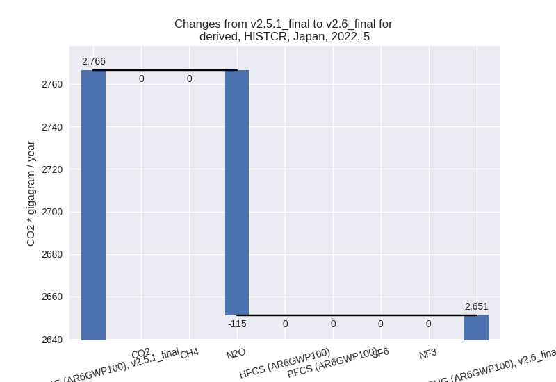
For 1990-2022 the changes per gas
are:
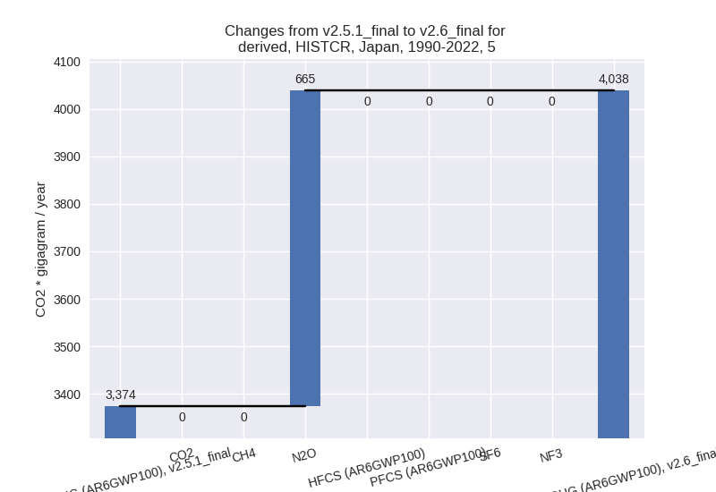
third party scenario (HISTTP):
Most important changes
per time frame
For 2022 the following sector-gas combinations have
the highest absolute impact on national total KyotoGHG (AR6GWP100)
emissions in 2022 (top 5):
- 1: 2, HFCS (AR6GWP100) with -1068.37 Gg CO2 / year (-5.5%)
- 2: 2, CO2 with 782.94 Gg CO2 / year (1.5%)
- 3: 4, CH4 with 747.98 Gg CO2 / year (9.5%)
- 4: 1.A, CO2 with 696.40 Gg CO2 / year (0.1%)
- 5: 2, N2O with 461.02 Gg CO2 / year (43.6%)
For 1990-2022 the following sector-gas combinations
have the highest absolute impact on national total KyotoGHG (AR6GWP100)
emissions in 1990-2022 (top 5):
- 1: 2, CO2 with 836.05 Gg CO2 / year (1.2%)
- 2: 4, CH4 with 665.61 Gg CO2 / year (4.7%)
- 3: 5, N2O with 664.71 Gg CO2 / year (19.7%)
- 4: 2, N2O with 152.07 Gg CO2 / year (3.7%)
- 5: 4, N2O with 79.61 Gg CO2 / year (3.4%)
Changes in the main sectors for aggregate KyotoGHG (AR6GWP100)
are
- 1: Total sectoral emissions in 2022 are 1028723.50
Gg CO2 / year which is 89.6% of M.0.EL emissions. 2022 Emissions have
changed by 0.1% (744.20 Gg CO2 /
year). 1990-2022 Emissions have changed by -0.0% (-13.27 Gg CO2 / year).
- 2: Total sectoral emissions in 2022 are 79854.15 Gg
CO2 / year which is 7.0% of M.0.EL emissions. 2022 Emissions have
changed by -0.1% (-41.80 Gg CO2 /
year). 1990-2022 Emissions have changed by 1.2% (1212.26 Gg CO2 / year).
- M.AG: Total sectoral emissions in 2022 are 22791.99
Gg CO2 / year which is 2.0% of M.0.EL emissions. 2022 Emissions have
changed by 0.0% (0.00 Gg CO2 /
year). 1990-2022 Emissions have changed by 0.0% (0.00 Gg CO2 / year).
- 4: Total sectoral emissions in 2022 are 14650.75 Gg
CO2 / year which is 1.3% of M.0.EL emissions. 2022 Emissions have
changed by 8.5% (1152.20 Gg CO2 /
year). 1990-2022 Emissions have changed by 3.6% (739.75 Gg CO2 / year). For 2022 the
changes per gas
are:
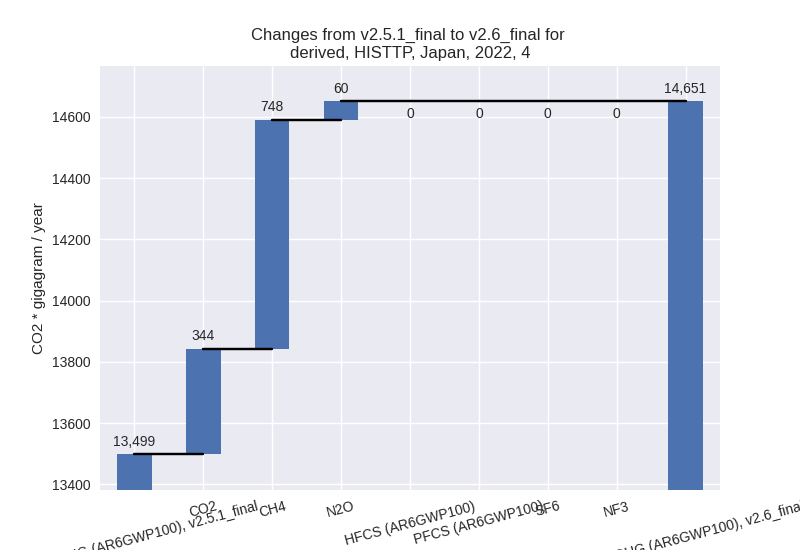
For 1990-2022 the changes per gas
are:
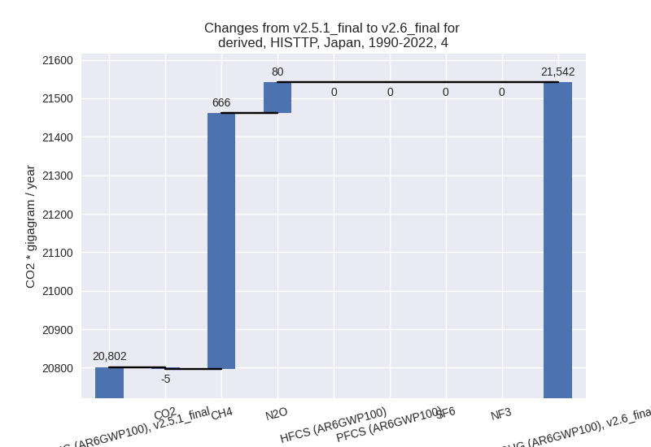
- 5: Total sectoral emissions in 2022 are 2651.11 Gg
CO2 / year which is 0.2% of M.0.EL emissions. 2022 Emissions have
changed by -4.2% (-115.29 Gg CO2 /
year). 1990-2022 Emissions have changed by 19.7% (664.71 Gg CO2 / year). For 2022 the
changes per gas
are:
For 1990-2022 the changes per gas
are: